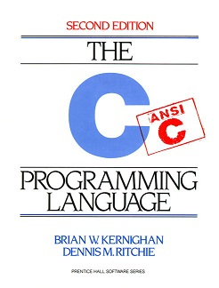

This web site contains several descriptions of some of my favorite books. I created this web site to give you some basic overviews of the books that I consider to be not only personal favorites of mine, but also entertaining. I hope you will like my book descriptions and furthermore, I hope you will purchase one of my books from Amazon. Below is my favorite book.
 The C Programming Language By Dennis M Ritchie and Brian W Kernighan is an excellent book for both new comers and expert programmers. The books is packed and concise. This books is written by the person that created the language, so there is no better source of information. I highly recommend this book to anyone who wishes to become a C programmer.